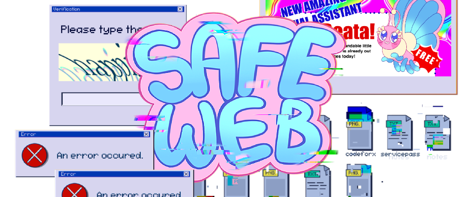
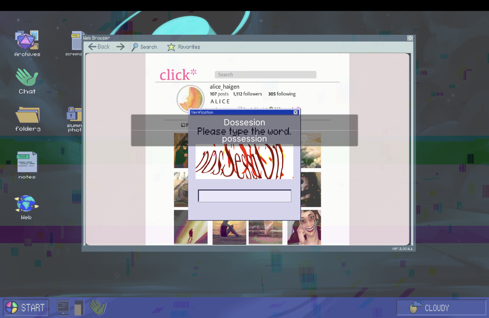
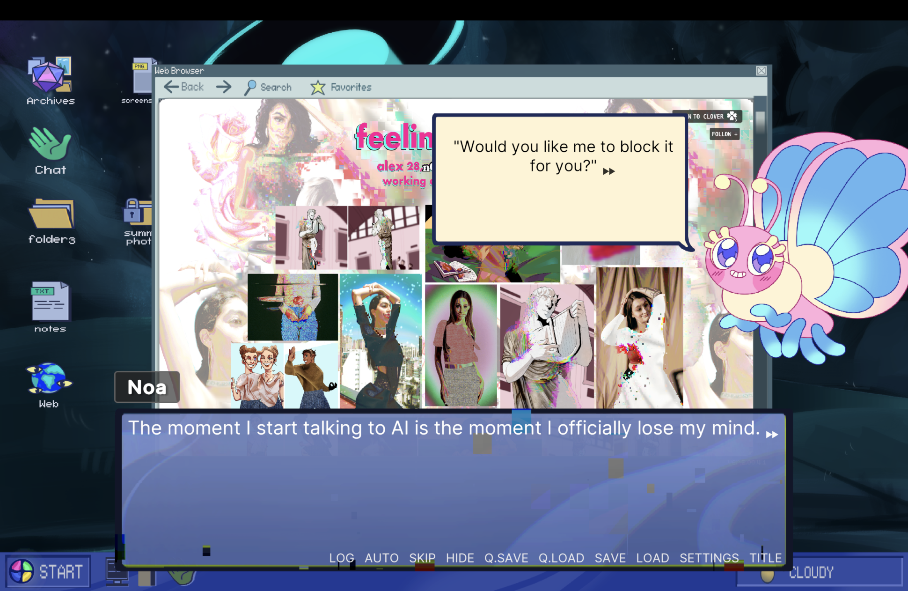
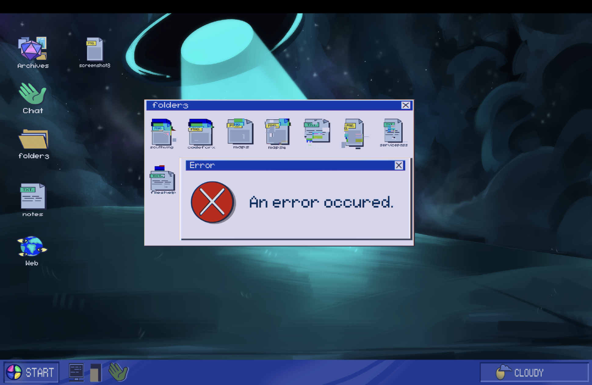
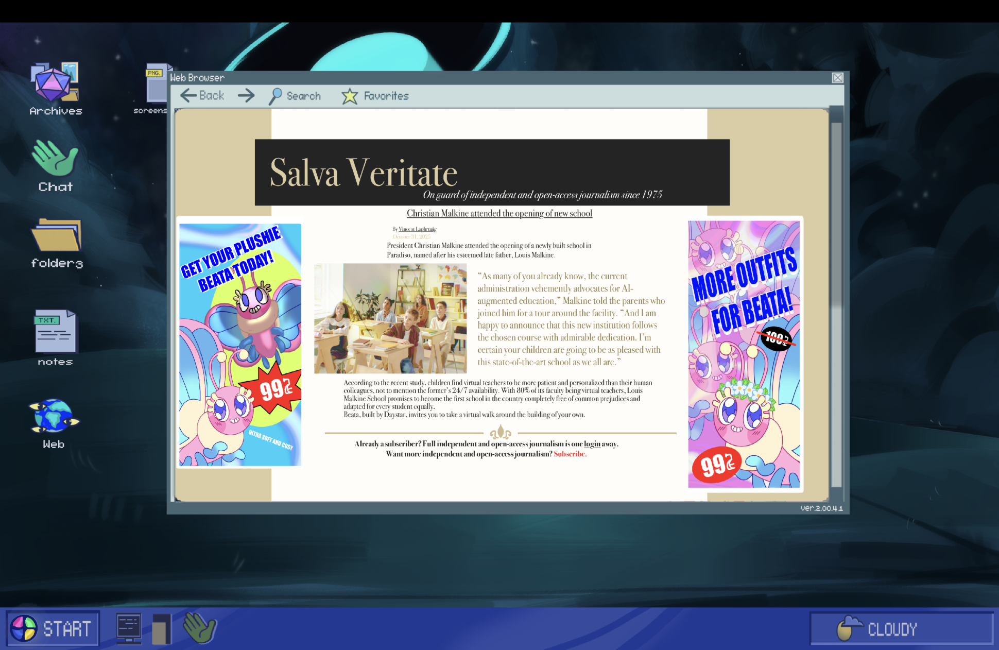
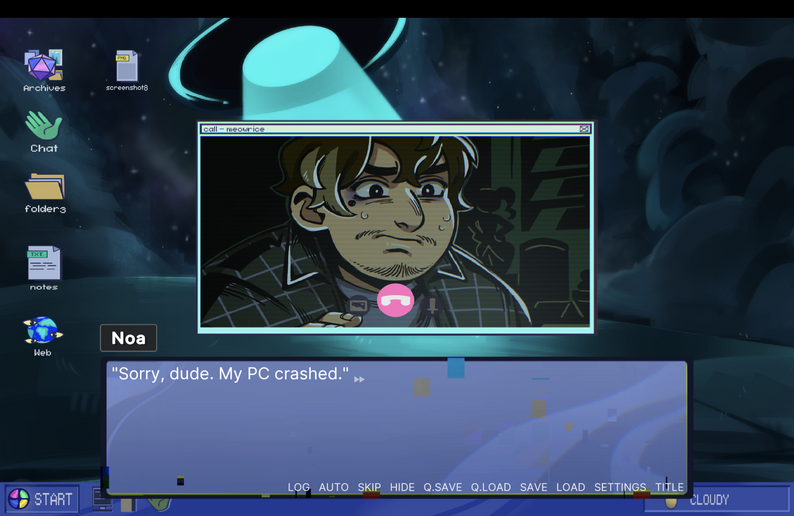

Safe Web
A Deep Dive
A visual novel created in Unity for a horror game jam. Includes a virtual computer interaction system.

Project Overview
Safe Web is a horror game made by a team for a Spooktober game jam, built in Unity (C#), with me as the main programmer. The whole game takes place on a fake computer: you click around a desktop, open folders, browse a pretend internet, and the horror surfaces through what you find. Can you uncover the story hidden in the files and websites?
Key Features
- Virtual computer desktop you actually click around: icons, folders, a chat app, and a video call window
- A simulated web browser with several in game websites, plus back/history and favorites
- Multiple endings based on the choices you make
- Voice acting and a retro computer look
Development Details
- Role: Main Programmer (team project)
- Engine: Unity (with Naninovel visual novel framework)
- Language: C#
- Status: Completed
- Platforms: Windows, Mac
Media





Download & Source
What I worked on
Safe Web is a horror game disguised as a computer: you click around a virtual desktop, browse websites, and the story surfaces through what you find. Naninovel runs the dialogue scenes the writers wrote; everything the player clicks, and the system that decides which part of the story happens next, was the programming side, and the half of the project I owned as main programmer. The whole thing runs on an event-driven setup, the desktop, browser, apps, and story communicate through events instead of being wired together directly. The main systems:
Development Insights
Safe Web was a fun and interesting project to work on because of its unique mechanics. Instead of a normal game world, the whole game takes place on a fake computer, so the challenge was making a desktop and a browser that actually felt real, then letting the story take control of them to set up the scares. Getting all those pieces to work together was tricky, and doing it with a team made it a really rewarding one to be part of.